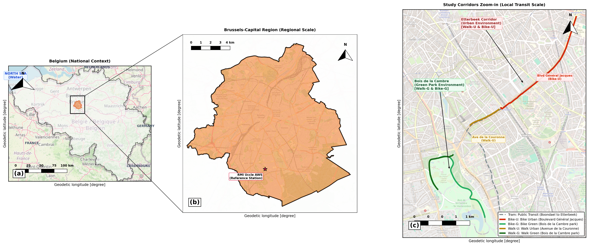
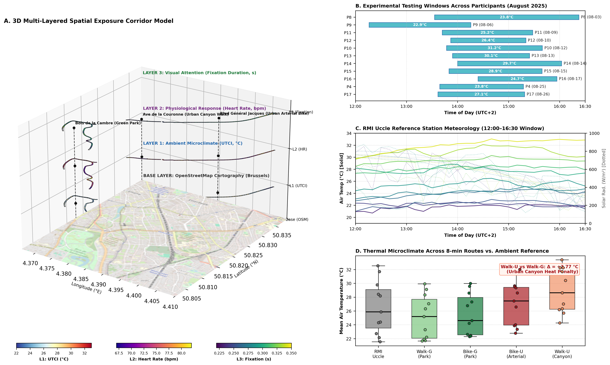

Review the newly updated 3-panel study area location map and the proposed redesigns for the multi-domain overview figure.
1. 3-Panel Study Area Location Map: (a) Belgium ➔ (b) Brussels ➔ (c) Route Corridors Zoom
3-Tier Spatial Cascade with Softened Transparent OSM

Cartographic Details & Answers to Your Questions:
North-West Water Question:Yes, 100% geographically correct! Belgium's north-west border is the North Sea (67 km coastline). It is now clearly labeled "NORTH SEA (Water)" in blue, alongside neighboring nations (France, Netherlands, Germany, Luxembourg).
Transparent OSM Base: Softened with a white blend layer (40–45% transparency) across all panels so the background street map is subtle and legible while boundaries, study boxes, and routes stand out sharply.
Panel (a) — National Scale: Kingdom of Belgium territory, North Sea coastline, Brussels Capital Region highlighted in orange (#f16913), locator bounding box, 0–100 km scale bar, and north arrow.
Panel (b) — Regional Scale: Official Brussels-Capital Region boundary (OSM Relation 54094), exterior white mask, RMI Uccle AWS station, and red dashed study area box with connectors pointing to (c).
WalkG (Dark Green) & BikeG (Emerald Green) in Bois de la Cambre.
WalkU (Amber) & BikeU (Crimson) along Avenue de la Couronne and Boulevard Général Jacques in the Etterbeek Corridor (Ixelles excluded per your instruction).
Tram 7 (Dashed grey line).
Scale bar (0–1 km / 1000 m), north arrow, tag (c), and full legend.
Zero Perspective Distortion: Instead of tilting the corridors at an oblique angle where North–South routes are squished into hairlines, each layer is shown in a synchronized, top-down 2D planimetric view over the OpenStreetMap base.
Full Buffer Visibility: 50 m buffer polygons are clearly drawn at readable width without overlapping or cutting each other. Color gradients across segments are immediately distinguishable.
Layer A1 (Microclimate): Mean UTCI (°C) along all 50 m buffer segments (RdYlBu colormap: cool blue in the park to hot red on urban asphalt).
Layer A2 (Physiology): Mean Heart Rate (bpm) across participants (Plasma colormap: elevated on urban transit, lower in park green).
Layer A3 (Visual Attention): Mean Fixation Duration (s) (Viridis colormap: longer exploratory fixations in green space).
Integrated Multi-Panel Layout: Keeps Panels B (Testing Timeline), C (RMI Uccle Synoptic Meteorology), and D (Urban Canyon Heat Penalty boxplots) aligned with Panels A1–A3.
Direct Hypothesis Testing: Unrolls the 8-minute routes along the horizontal axis (Route Progress from 0% to 100%) and compares Green vs. Urban transit directly side-by-side with continuous mean ± SEM ribbons.
Track 1 (Thermal Stress): Shows the continuous UTCI trajectory — demonstrating that walking and cycling in the urban canyon exposes participants to persistent heat stress ~3–4°C higher than in Bois de la Cambre.
Track 2 (Acoustic Exposure): Noise level in dBA, showing severe acoustic spikes along Boulevard Général Jacques and Avenue de la Couronne compared to peaceful park paths.
Track 3 (Physiological Arousal): Continuous heart rate (bpm), showing physiological elevation and cardiovascular strain in urban vs. green settings.
Track 4 (Visual Attention): Fixation duration (s), highlighting how complex urban traffic forces shorter, scattered fixations whereas green space allows longer, relaxed fixations.
4. Current 3D Perspective Map (Reference)
Original Draft (from temp_3d_meteo_map.py)

Limitations Identified:
Oblique angle (23° elevation) foreshortens the 4 km × 4 km spatial domain, squishing the corridors.
20 m buffer width is too thin to read clearly across a 4 km extent in 3D.
Layer 3 (Fixation) is directly above Layer 2 (Heart Rate) and Layer 1 (UTCI), physically occluding the lower layers.
Vertical dotted black pillar lines cut through the center of the maps, creating visual clutter.
Boundary-Clipped OSM Base: In Panel (a), the OpenStreetMap layer is strictly clipped inside Belgium (crisp white exterior, eliminating foreign roads and northwest water artifacts); in Panel (b), OSM is clipped strictly inside the Brussels-Capital Region shapefile boundary; Panel (c) remains fully detailed for the corridor.
50% Polygon Transparency: Belgium national boundary and Brussels-Capital Region boundary set to 50% opacity/transparency over the clipped OSM base map.
Panel (c) 50 m Flat-Cap Corridor Buffers: Displays exclusively the 50 m flat-cap corridor buffer polygon envelopes (WalkG, BikeG, WalkU, BikeU, Tram) over OpenStreetMap, replacing the route line vectors for clean, publication-grade corridor geometry.
Study Area Bound Rectangle Added in Panel (b): Dynamically linked to Panel (c), clearly framing the Etterbeek & Bois de la Cambre experimental corridors within Brussels.
Meteorological Station Star Removed: Panel (b) no longer displays the AWS star symbol, keeping the map clean and focused.
Opaque Transit Routes:WalkG, BikeG, WalkU, BikeU, and Tram remain 100% opaque, sharp, and vibrant with their 50 m corridor buffer envelopes.
Connectors & Details: Thin connector lines linking Brussels in Panel (a) to Panel (b), scale bars, north arrows, panel tags (a), (b), (c), and integrated legend.
Direct Access in QGIS:Project ➔ Layouts ➔ styled_map or template output/QGIS_Study_Area/styled_map.qpt.